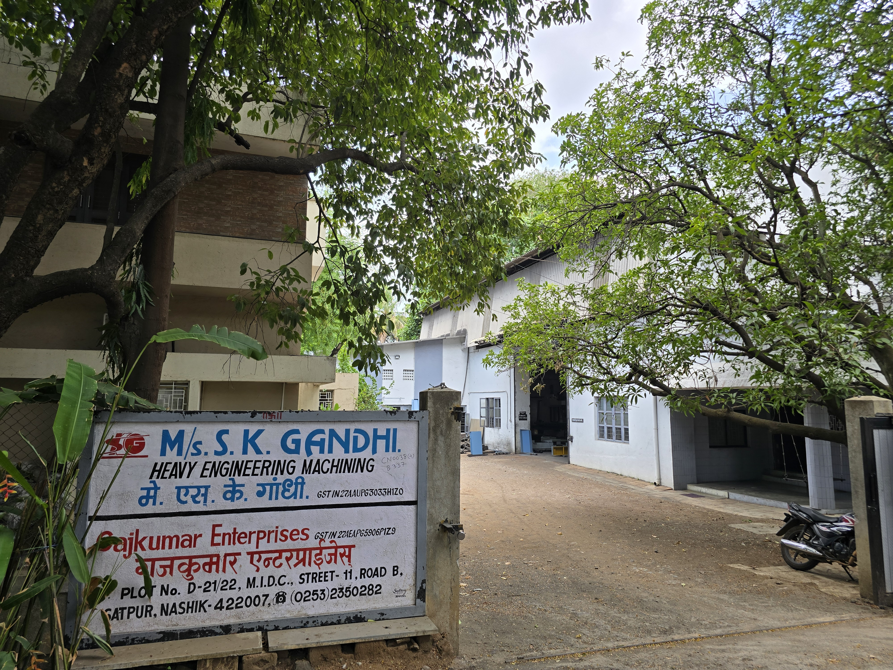
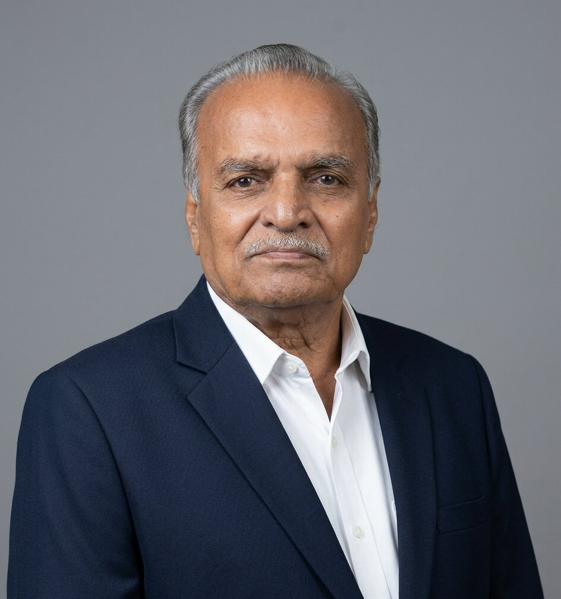
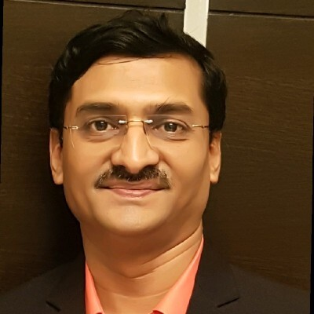

Our Story
Over five decades of precision engineering from the heart of Nashik's industrial belt — built on craftsmanship, commitment, and consistency.
Est. 1973
M/s S.K. Gandhi was established in 1973 at MIDC Satpur, Nashik — one of Maharashtra's premier industrial zones. What began as a precision machining workshop has grown over five decades into a trusted name in heavy engineering, serving some of India's and the world's most demanding clients.
We combine decades of hands-on expertise with a modern fleet of CNC and VMC machinery to deliver components and tooling of the highest precision. Our team of dedicated professionals is committed to reliability, accuracy, and on-time delivery — making us a trusted partner for clients across automotive diecasting, defence, energy, and specialty material machining sectors.
Today, led by second-generation management, M/s S.K. Gandhi continues to expand its capabilities while maintaining the exacting standards that have defined the company since its founding.

At a Glance
Decades of hands-on experience in heavy engineering and precision machining across diverse and demanding industries — built through consistent delivery and long-term client relationships.
Equipped with German and Taiwanese VMC machines controlled by Mitsubishi, Fanuc and Siemens controllers, our facility handles components from intricate precision parts to large heavy engineering workpieces.
Advanced machining of graphite and titanium with a centralised vacuum dust collection system and specialised tooling — a capability few facilities in the region can offer.
Our quality management system is independently certified by QRO, ensuring consistent delivery of precision-engineered components that meet the most exacting dimensional requirements.
Our People
Our team of 20 dedicated professionals combines deep technical expertise with hands-on experience to deliver engineering solutions that meet the most demanding requirements.

Founder of M/s S.K. Gandhi, who established the company in 1973 at MIDC Satpur, Nashik, laying the foundation of precision and integrity that continues to define the firm today.

Driving force behind the company's growth and long-term client relationships — continuing the founder's legacy with a focus on quality and reliability.
Overseeing day-to-day operations, production quality, and new capability development with a focus on precision and on-time delivery.
Our team is organised across five functional layers to ensure precision, accountability, and on-time delivery.
Strategic direction & client relationships
Design, quality & materials — 10+ yrs each
Overseeing day-to-day production
Skilled CNC & conventional machine operators
Floor support & operational logistics
Whether you have a complex precision requirement or a large fabrication job, we're ready to discuss how we can help.
Get in Touch